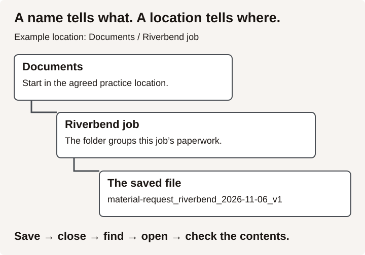

Steps checked on Windows 11 with File Explorer, Word for Microsoft 365 and OneDrive, 2026-11-06. On a Mac, a tablet or a shared training computer the buttons may sit in a different place. Ask your instructor where class work is saved.
Why this matters on the job
On a BC job site, a foreman may send you a tool list, a safety form or a set of drawings and ask for it back by the end of the day. If you save it as "Document1" on the desktop, nobody can find it, and that includes you next week. A good file name and the right folder save time and stop people working from an old copy.
Key ideas
Device, app, file and folder. The device is the equipment: a laptop, tablet or phone. An app is the program you use, such as Word. A file is one saved piece of work, such as a letter or a spreadsheet. A folder holds files, the way a job box holds tools.
Name and location are two different things. The name tells you what the file is. The location tells you where it is saved. You need both to find it again.
A good file name says what the file is, which job it belongs to and the date or version. For example:
tool-list_riverbend-job_2026-11-06_v1
- Use words a co-worker would search for.
- Put the date year first (2026-11-06) so files sort in date order.
- Use
v1,v2to tell versions apart. Before editing, save a copy with the new version name so the earlier version stays unchanged, even when AutoSave is on. - Windows does not allow these characters in a name:
< > : " / \ | ? *. OneDrive does not allow them either.
On this computer or in the cloud. A file saved in a OneDrive folder is stored online and can also sit on the computer. In File Explorer, OneDrive shows a small icon beside each file:
| What you see beside the file | What it means |
|---|---|
| Blue cloud outline | Online only. It does not take space on the computer, and you cannot open it without the internet. |
| Green tick | Downloaded to this device. You can open it without the internet. |
| Solid green circle with a white tick | Set to "Always keep on this device". |
Finding a file. Open File Explorer with the Windows logo key + E. Use the search box in File Explorer to search by name. If you know the folder, go to it first, then search. Windows desktop search can find online-only OneDrive files by name, but it cannot search the words inside them.
Worked example
Devon works for a fictional framing contractor, Riverbend Builders. The foreman emails a blank material request form. Devon:
- Opens File Explorer (Windows logo key + E) and goes to Documents.
- Selects New > Folder, types
Riverbend job, and presses Enter. - Opens the form in Word, fills it in and selects File > Save As.
- Browses to the
Riverbend jobfolder. - Types the name
material-request_riverbend_2026-11-06_v1and selects Save. - Closes Word, then finds the file again by typing
material-requestin the File Explorer search box.
The name tells anyone what the file is, which job and which day. The folder keeps it with the rest of that job's paperwork.

Practice
Use the practice folder your instructor gives you. Use invented job names only. Do not open other people's files.
Task 1 (level 1) Match each word to its meaning: device, app, file, folder.
| Word | Meaning |
|---|---|
| One saved piece of work | |
| A place that holds files | |
| The equipment you hold or sit at | |
| The program you use to do a task |
Task 2 (level 1) In your practice location, make a folder named IS4S-digital-[your initials]. Inside it, make a second folder named Riverbend job. Show your instructor both folders.
Task 3 (level 1) Open Word. Type one line: Tool check: 2 tape measures, 1 chalk line, 1 speed square. Save it in Riverbend job with a name that follows the pattern in Key ideas. Write the name and the location you used.
Name: ________
Location: ________
Task 4 (level 1) Close Word. Find your file using the File Explorer search box. Open it and check that your line of text is there.
Task 5 (level 2) Before changing the list, save a copy with v2 in its name using Save As or Save a Copy. Check that you are working in v2, then add 1 utility knife and save. Close the file. Open both versions and check that v1 is unchanged and only v2 has the knife. Copying before editing protects v1 when AutoSave is on.
Task 6 (level 1) Each of these names has a problem. Write a better name for each one.
Document1final final NEWdrawings: unit 4?
Check yourself
- What is the difference between a file's name and its location?
- Why put the date year first, as in 2026-11-06?
- You see a blue cloud outline beside a file and the internet is down. Can you open it?
- Which keys open File Explorer?
- Why save a changed file as
v2instead of saving overv1?